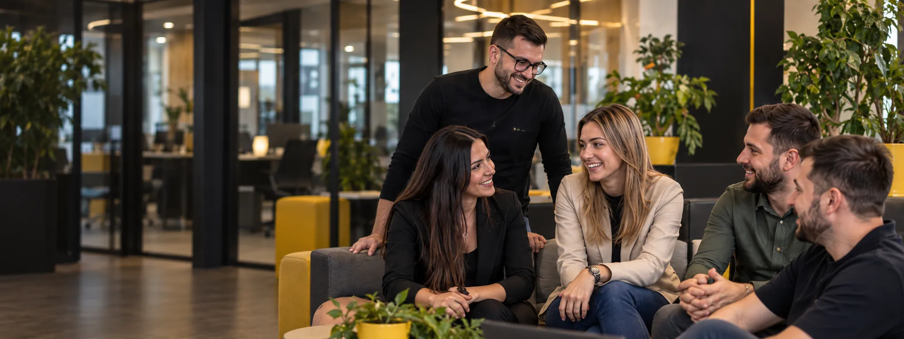
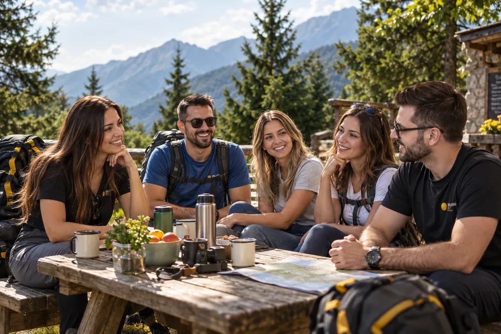
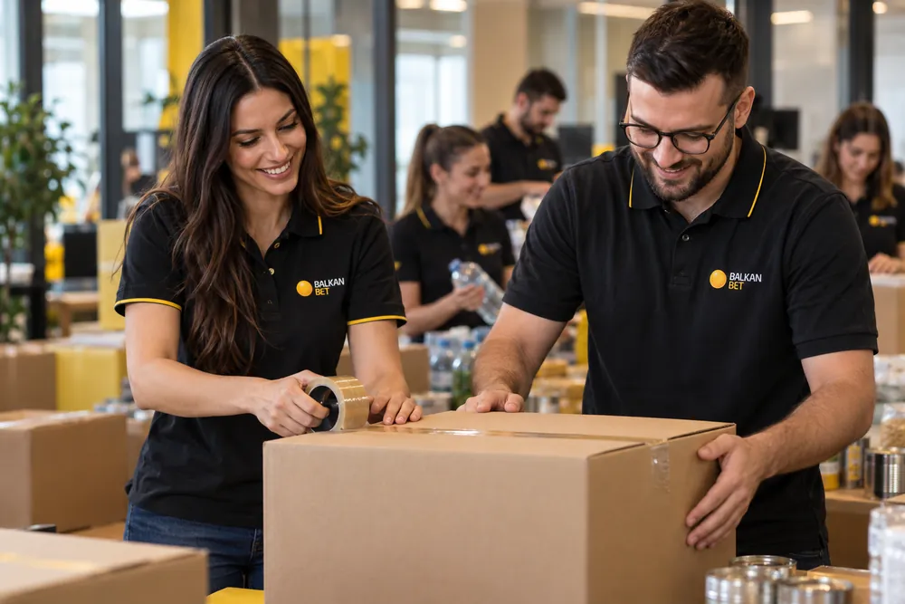

01Rast bez granica
- Interne prilike
- Obuke i sertifikacije
- Mentorstvo

Tvoj doprinos se vidi. Tvoj razvoj ima podršku. Upoznaj ljude i atmosferu koja nas povezuje.
Naše reči. Naša iskustva. Jedan običan dan u dobrom timu.
Ovde možeš biti svoj, a istovremeno rasti i učiti nove stvari svaki dan.
Tri stuba na kojima gradimo iskustvo svakog kolege — u lokalu i u centrali.


Pronađi svoje mesto među nama.
Različiti poslovi. Ista podrška tima.